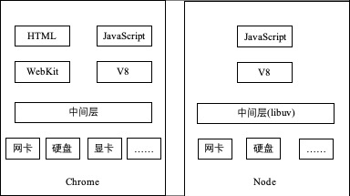
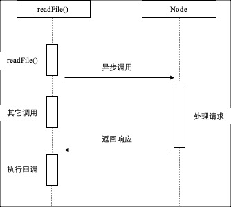
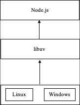

2009年，创始人Ryan Dahl基于V8引擎，创建了一个轻量级的Web服务器并提供了一套库，这就是Node.js（Node）的最初版本；2010年，Node获得硅谷云计算服务商Joyent公司的资助，Ryan Dahl加入Joyent公司全职负责Node的发展；2011年，Node在微软的支持下发布了其Windows版本；2012年，Ryan Dahl将掌门人的身份交给Isaac Z.Schlueter（NPM的作者），之后Node的版本发布和bug修复等工作由他接手。
为什么是JavaScript
Node设计的初衷，是设计一种Web服务器，Web服务器有两个要点：事件驱动、非阻塞I/O。相比于C、Lua、Ruby等语言，JavaScript比C的开发门槛要低、比Lua的历史包袱要少（Lua包含了很多的阻塞I/O库）、比Ruby的性能要高。
尽管JavaScript存在很多年，但是服务器端一直没有市场，历史包袱几乎为零，为其导入非阻塞I/O库没有额外的阻力；同时，JavaScript在浏览器中有广泛的事件驱动方面的应用，暗合Node事件驱动的需求；最后，Chrome浏览器的JavaScript引擎V8在第二次浏览器大战中摘得性能第一的桂冠。因此，基于以上三点：高性能、事件驱动、非阻塞I/O，JavaScript成为Node的实现语言。
Node与Chrome的组件比较

Chrome浏览器与Node的组成结构上图所示，Chrome除了V8作为JavaScript的引擎外，还有WebKit布局引擎；除此以外，HTML5在发展过程中定义了更多更丰富的API，为Chrome浏览器的前端展示起到了非常重要的作用。
除了HTML、WebKit和显卡这些UI相关技术没有支持以外，Node的结构和Chrome十分相似。它们都是基于事件驱动的异步架构，浏览器通过事件驱动来服务界面上的交互，Node则通过事件驱动来服务I/O。
Node的兴起给JavaScript语言带来的意义非凡。在Node中，JavaScript可以随心所欲访问本地文件，可以搭建WebSocket服务器端，可以连接数据库，同样也可以玩转多进程。Node打破了过去JavaScript只能在浏览器中运行的局面，JavaScript不再继续限制在浏览器中与CSS、DOM树打交道。前后端编程环境统一，可以大大降低前后端转换所需要的上下文交互的代价。
Node特点
作为JavaScript语言的服务端运行框架，Node保留了前端JavaScript中的接口，依旧基于作用域和原型链。Node的相较于其它编程语言，具有以下特点：
1. 异步I/O
熟悉Ajax的开发人员对异步I/O应该比较了解，如下代码所示：1
2
3
4$.post('\url', {}, function(data) {
console.log('收到响应');
});
console.log('发送请求结束');
熟悉异步机制的开发者知道，“收到响应”是在“发送请求结束”之后输出的。在调用“$.post”方法后，程序会立即执行“发送请求结束”的打印，而“收到响应”的执行时间是不被预期的。
在Node中，异步机制很常见，以读取文件为例：1
2
3
4
5var fs = require('fs');
fs.readFile('/path', function(err, file) {
console.log('读取文件完成');
});
console.log('开始读取文件');
同样的，“读取文件完成”是在“开始读取文件”之后打印的，“读取文件完成”的执行取决于读取文件操作的异步调用何时结束。下图就这个例子展示了异步调用的时序图：

在Node中，绝大多数的操作都是以异步方法来进行调用的，这样我们可以从语言层面自然地进行并行I/O操作，每个调用之间无须等待之前的I/O操作结束。
2. 事件与回调
首先，我们来看这样两段代码：1
2
3
4
5
6
7
8$.ajax({
'url': '/url',
'method': 'post',
'data': {},
'success': function(data) {
// success事件
}
});
1 | var http = request('http'); |
以上两段代码分别是前端调用Ajax请求，后端创建了一个Web服务器。前端为Ajax请求绑定了success事件，后端为服务器绑定了request事件，同时对请求对象绑定了data事件和end事件。因此，对于前后端，事件都是常用的，尤其在异步任务场景下，如何协调各个事件的调用顺序是个难点。
回调函数是协调各个事件执行的方法之一，也是Node语言的一大特点。从异步I/O的内容来看，回调函数是最好的接收异步方法返回数据的方式。Node开发者需要明白，代码的编写顺序与执行顺序并无关系，异步机制和回调函数是代码流程控制的要点。
3. 单线程
Node保留了JavaScript在浏览器中单线程的特点，单线程的优势包括：
- 不用像多线程编程处处在意各线程状态的同步问题；
- 没有死锁的存在；
- 没有线程上下文交换所带来的性能上开销；
同样的，单线程也有其自身的弱点，主要有三点：
- 无法利用多核CPU；
- 一个错误就会引起整个应用退出，应用的健壮性有待考验；
- 大量计算占用CPU导致无法继续调用异步I/O；
浏览器中，JavaScript与UI共用一个线程时，JavaScript长时间执行会导致UI无法渲染，用户体现很差；同样，在Node中，长时间的CPU计算会导致后续的异步I/O无法调用。目前，解决浏览器中JavaScript大计算阻塞UI渲染的问题，是通过Web Workers创建工作线程来进行计算。工作线程为了不阻塞主线程，通过消息传递的方式来告知主线程结果。
Node采用了与Web Workers相同的思路来解决单线程大计算的问题：子进程（child_process）。Node可以通过子进程来应对单进程健壮性和无法利用多核CPU的问题。通过将计算分发到各个子进程，再通过进程之间的事件消息来传递结果。
4. 跨平台
Node原先只可以在Linux平台上运行，随着Node发展，在v0.6.0版本可以直接在Windows平台上运行。Node兼容Windows和Linux平台主要得益于平台层的架构，即libuv，它处于操作系统与Node上层模块系统之间，如下图所示。不仅如此，通过libuv，Node的第三方C++模块也可以实现跨平台，能直接被JavaScript调用。

总结
本文主要简单介绍了Node开发框架，可以知道Node的其中一个优势是异步机制，利用事件循环的处理能力可以很好地处理I/O密集型应用场景，不需要启动每一个线程来单独为每一个请求服务。